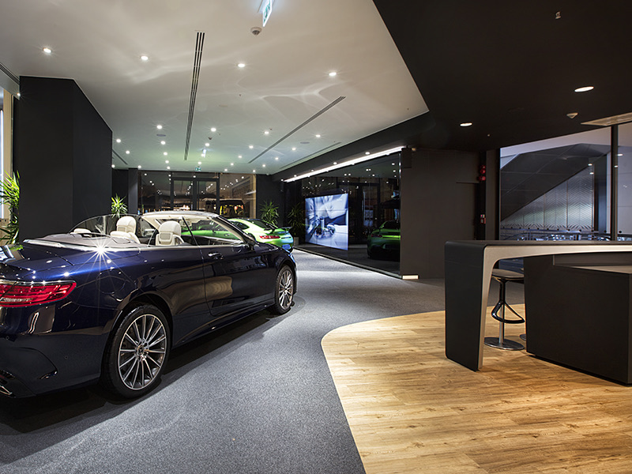
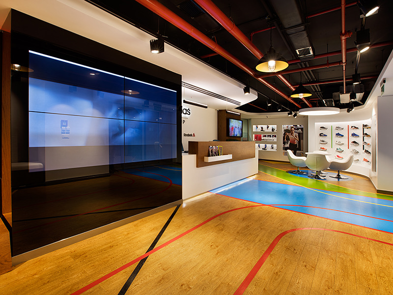
2000Boytorun Architects · İstanbul
Office Fit-Out
Çalışmayı seven insanlar için ofisler.
Ofis, showroom ve marka mekânları; tasarımdan anahtar teslime.
01Öne çıkan çalışmalar
Markaların kendini anlattığı mekânlar.
01Ofis
Mercedes-BenzMercedes-Benz IT Merkezi
İncele
02Ofis
PepsiCoPepsiCo Genel Merkezi
İncele 03Ofis
Adidas
03Ofis
AdidasAdidas Genel Merkezi
İncele 04Showroom
Mercedes-AMG
04Showroom
Mercedes-AMGAMG Lounge İstanbul Park
İncele 05Showroom
Mercedes-Benz
05Showroom
Mercedes-BenzMercedes-Benz Premium Showroomlar
İncele 06Showroom
Emaar
06Showroom
EmaarEmaar Dijital Showroom
İncele 07Ofis
Mazda
07Ofis
MazdaMazda Genel Merkezi
İncele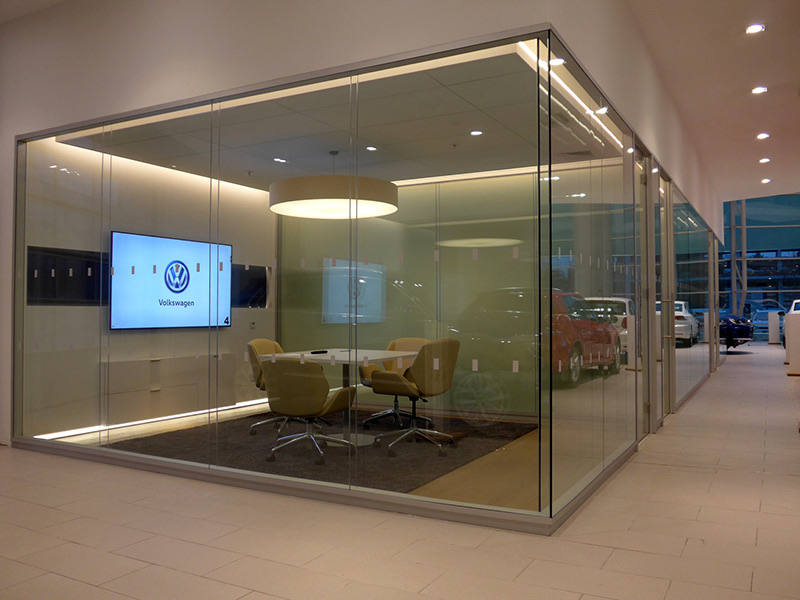
08Showroom VolkswagenVolkswagen Dijital Showroom
İncele 09Ofis
Recordati
09Ofis
RecordatiRecordati Ofisi
İncele 19Tüm çalışmalar02Hizmet alanları
Boş bir kattan, çalışmaya hazır bir mekâna.
Beş alan, tek ekip: tasarım, ihale, tedarik ve uygulama.
 01
01
Ofis tasarımı ve fit-out
Boş bir kattan çalışmaya hazır bir ofise.Keşfet 02
02
Anahtar teslim uygulama
Tek muhatap, tek takvim, tek bütçe.Keşfet 03
03
Showroom ve marka mekânları
Markanın kendini anlattığı mekânlar.Keşfet 04
04
Ofis yenileme
Çalışırken dönüşen ofisler.Keşfet 05
05
İşyeri danışmanlığı
Doğru kararı taşınmadan önce verin.Keşfet
04Rakamlar
2000’den beri, tek ekip.
Mercedes-Benz, dünya genelindeki bayi ve marka mekânları için yalnızca sekiz tasarım ofisiyle çalışıyor; Boytorun bunlardan biri.
- 2000yılından beri
- 27+yayınlanmış proje
- 8Mercedes-Benz’in dünya genelindeki lisanslı tasarım ofisi; biri Boytorun
- 6disiplin tek ekipte: tasarımdan mühendisliğe
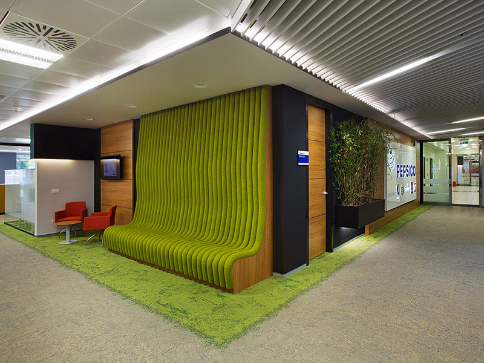
OfisPepsiCo Genel Merkezi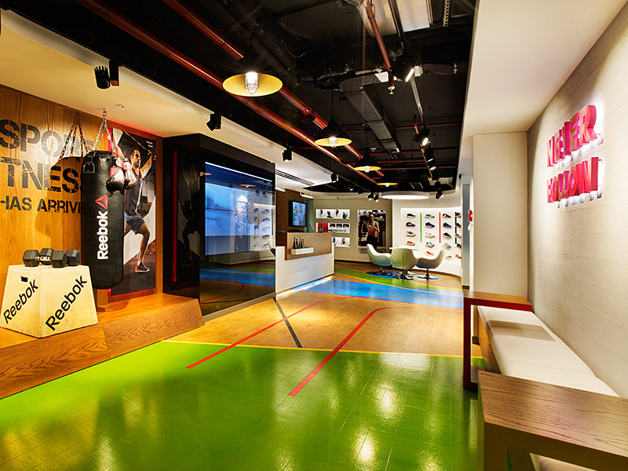
OfisAdidas Genel Merkezi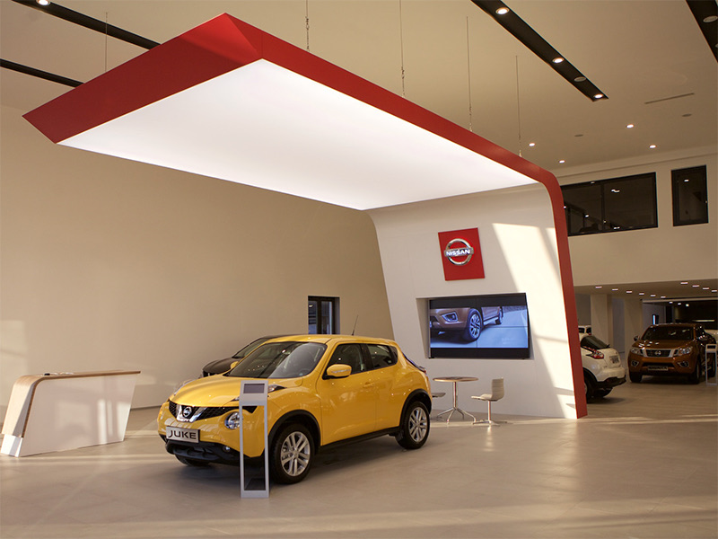
ShowroomNissan Türkiye Showroomları05Markalar
Dünyanın önde gelen markaları için çalışıyoruz


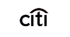


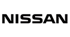
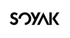


06Yayınlar
Uluslararası yayınlarda Boytorun.
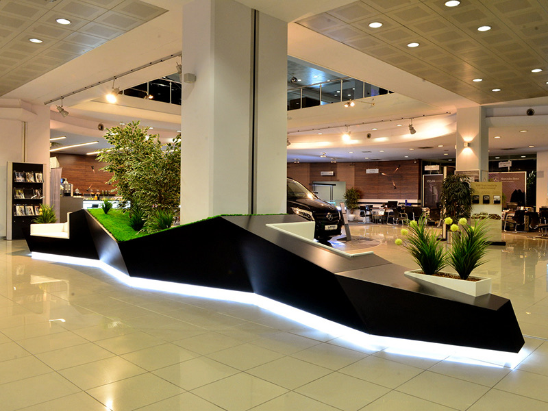
ShowroomMercedes-Benz Premium Showroomlar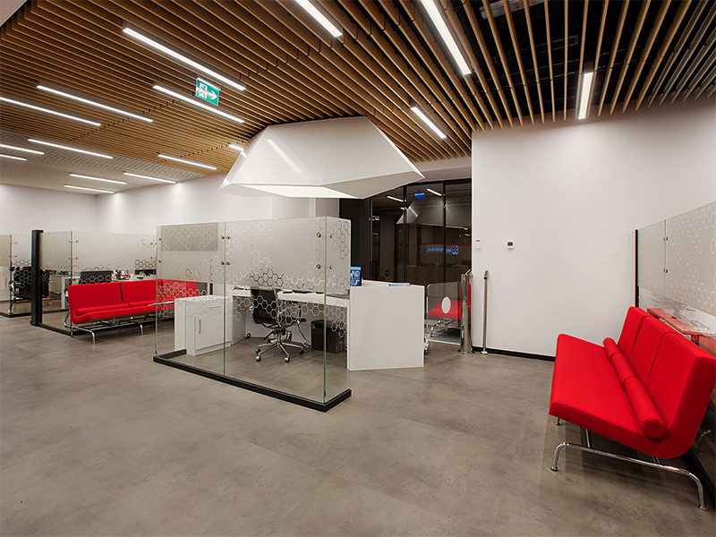
OfisRecordati Ofisi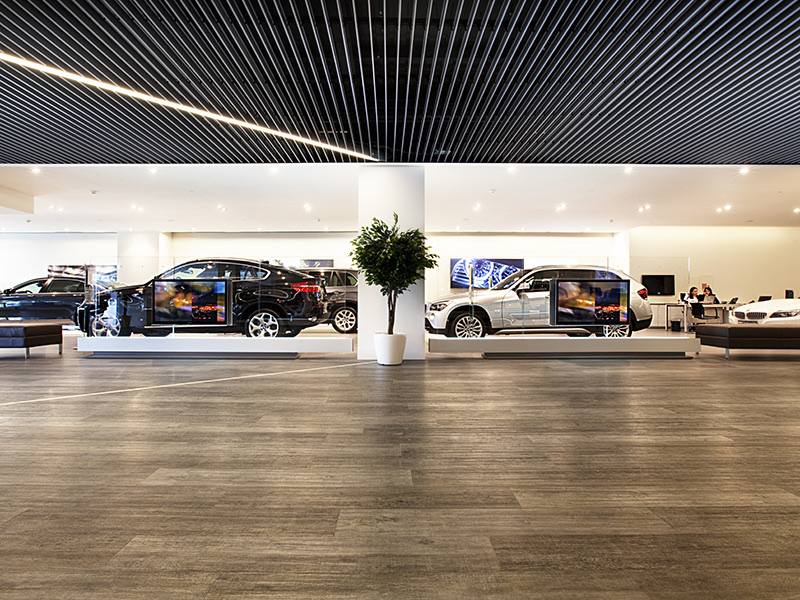
ShowroomBorusan Showroom07Süreç
Keşiften teslime altı adım.
Tek muhatap, tek takvim, tek bütçe.
- 01
Keşif ve ihtiyaç analizi
Ekibinizi, çalışma biçiminizi ve hedeflerinizi dinler; alanı yerinde inceleriz.
- 02
Konsept ve yerleşim
Yerleşim senaryoları ve tasarım konseptini birlikte değerlendiririz.
- 03
Tasarım ve bütçe
Projeyi detaylandırır, malzeme ve bütçeyi netleştiririz.
- 04
İhale ve tedarik
Keşif, şartname ve tedarikçi seçimini yönetiriz.
- 05
Uygulama ve kontrollük
Sahada kalite, takvim ve bütçeyi kontrol ederiz.
- 06
Teslim
Mekânı kullanıma hazır teslim eder, sonrasında da yanınızda oluruz.

İletişim
Yeni ofisinizi birlikte planlayalım.
Proje türü, yaklaşık alan ve şehir yeterli; gerisini birlikte netleştiririz.